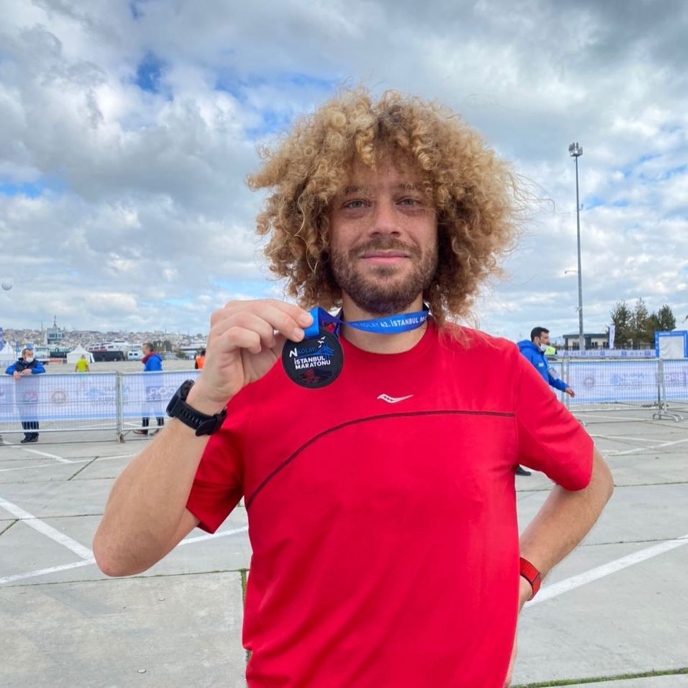
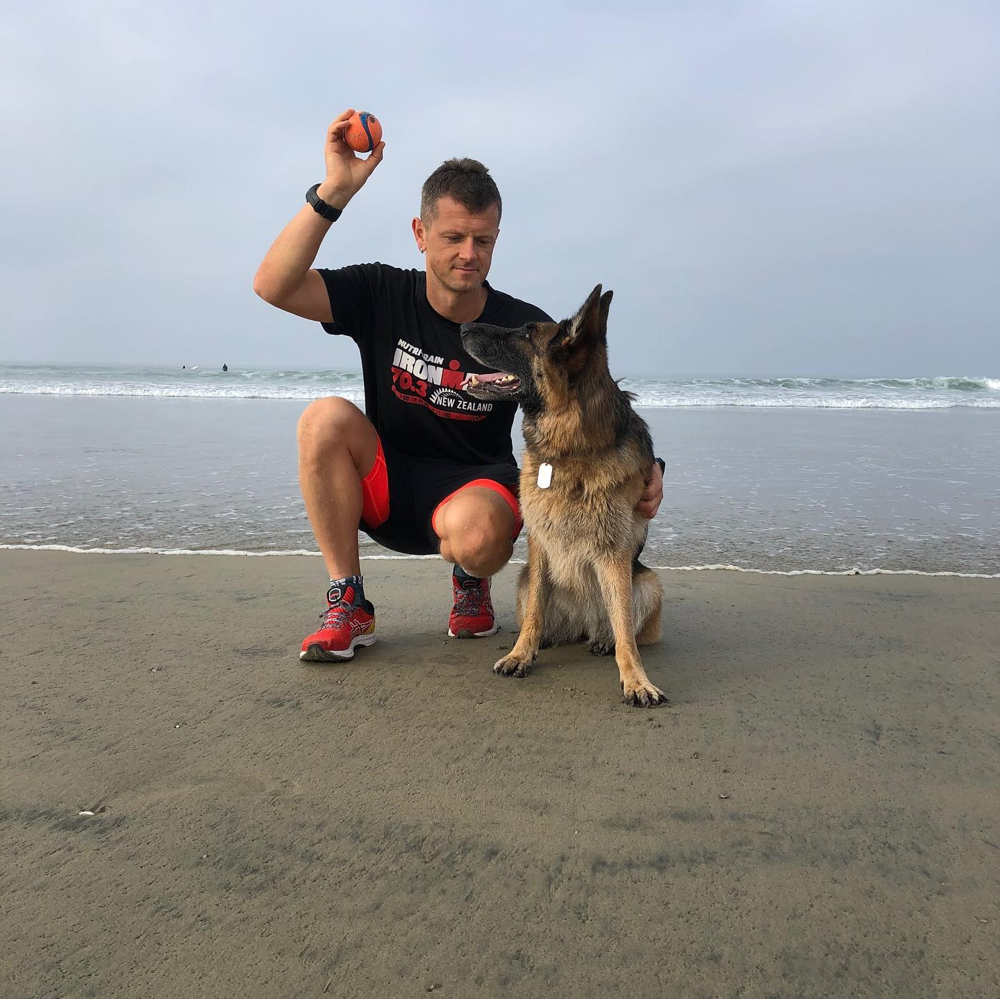
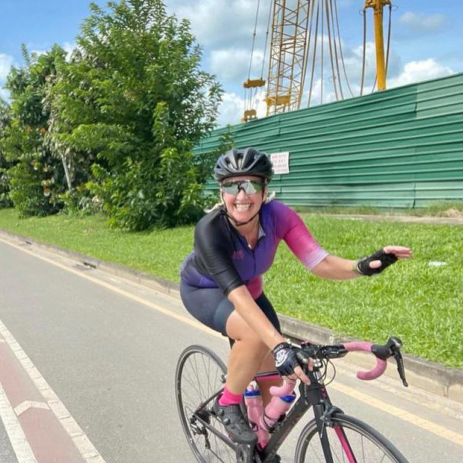
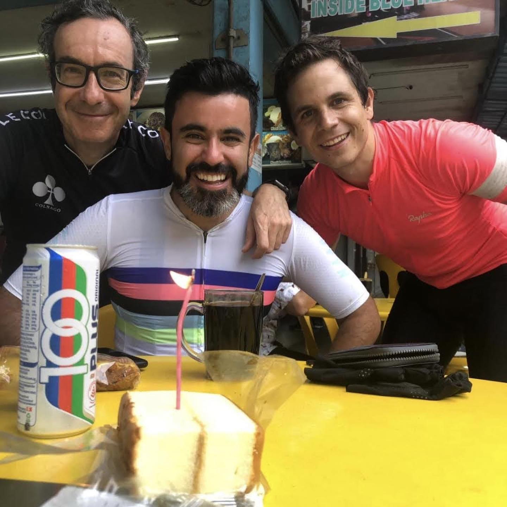
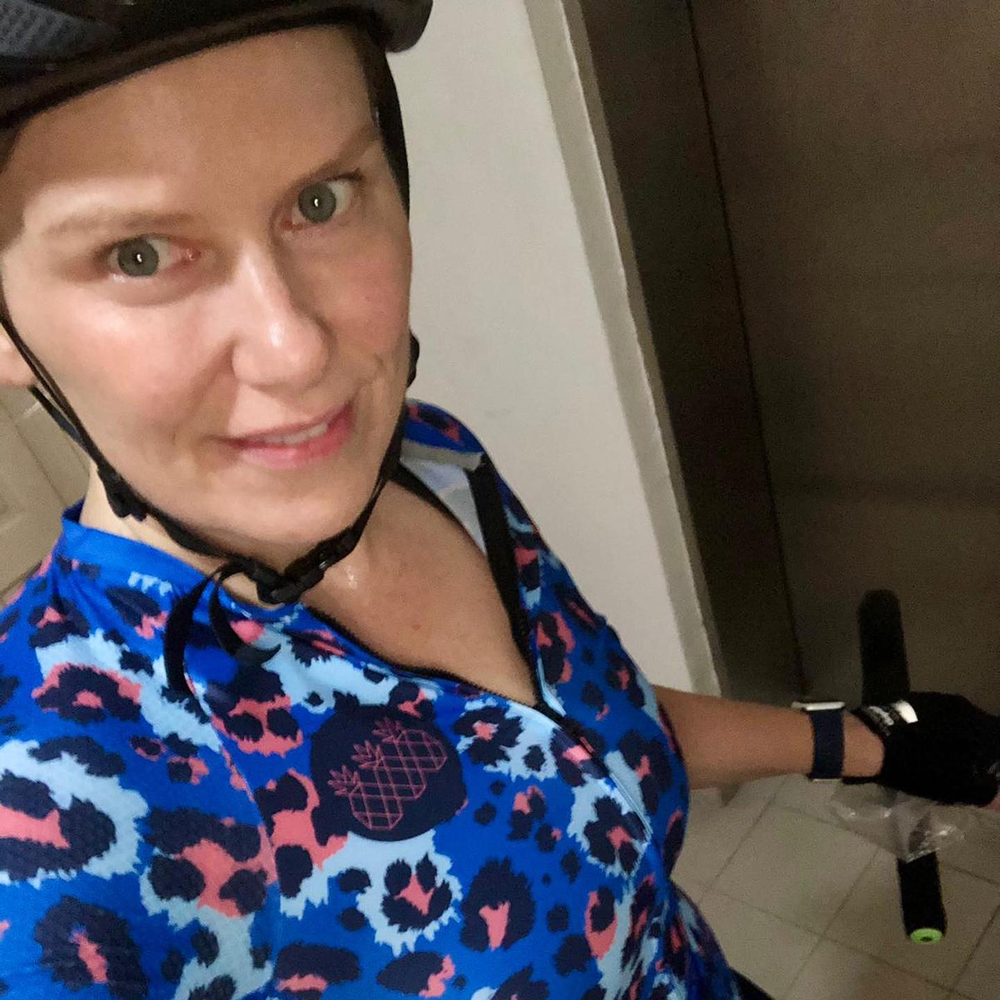
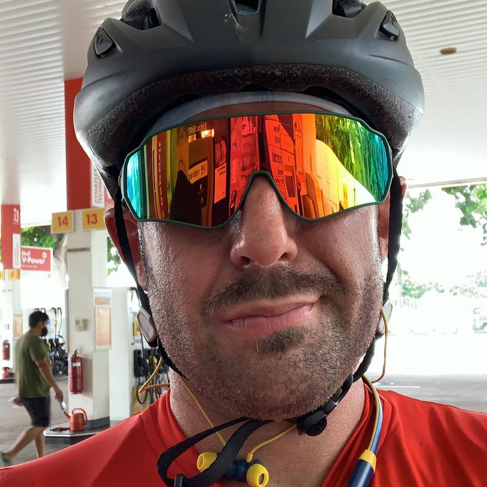
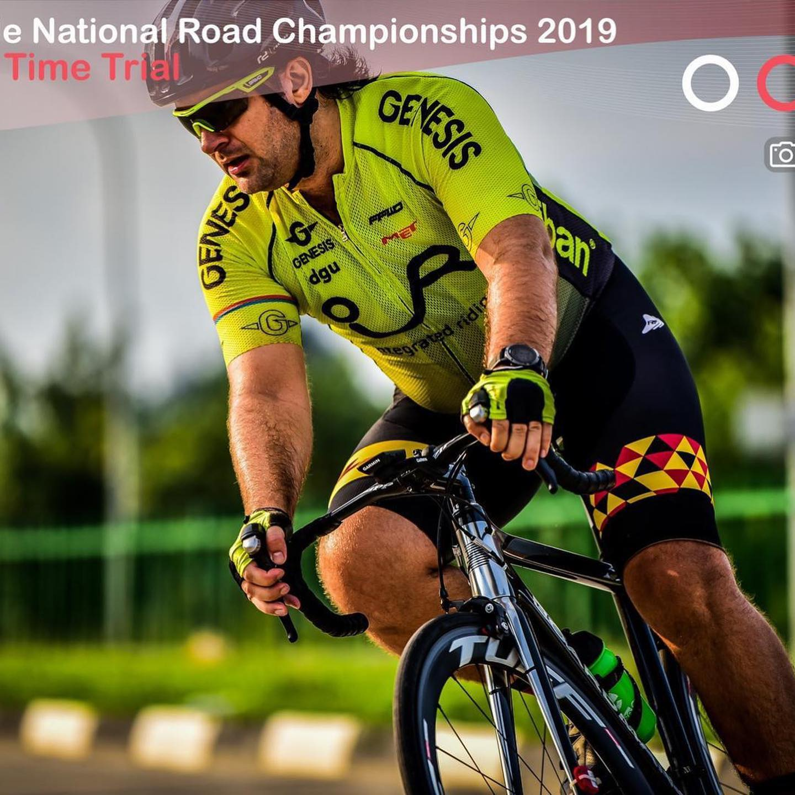
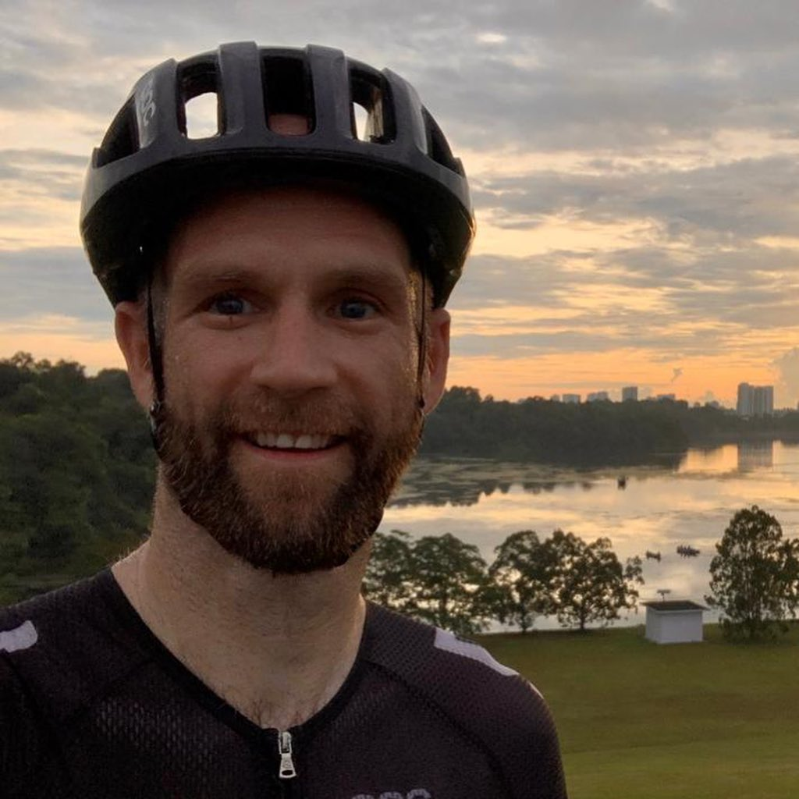
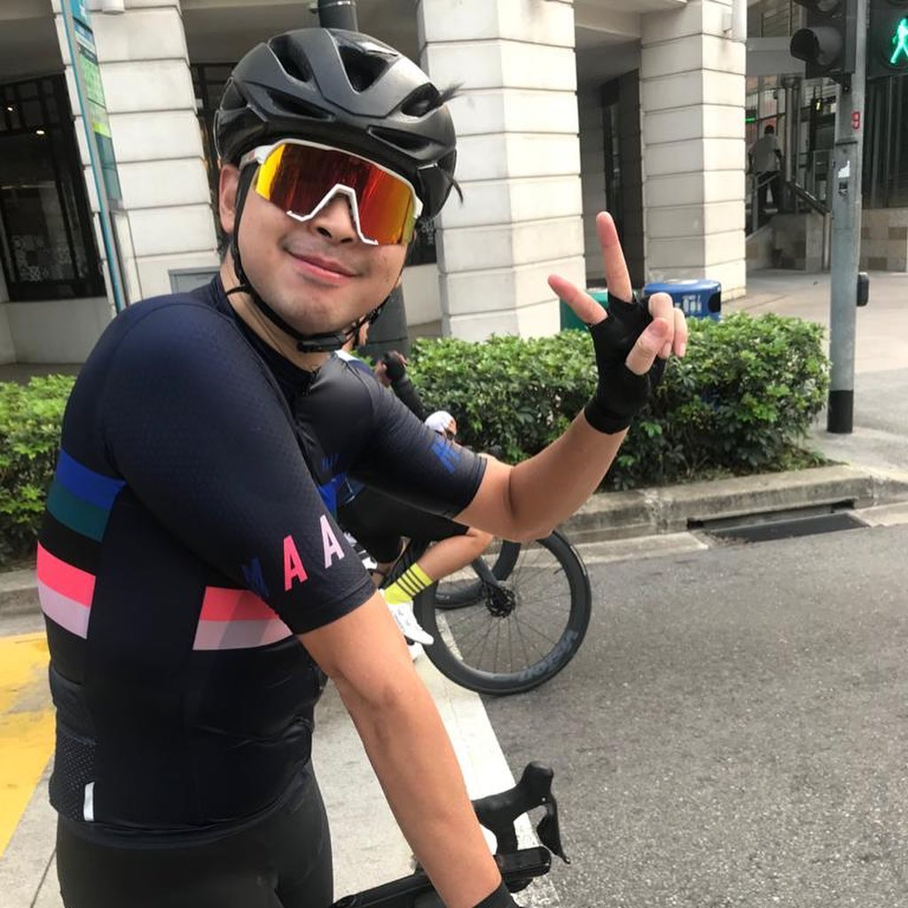

Here’s to our wonderful, determined, cheerful, optimistic mentees in #running and #cycling 🍾!You are our heroes of 2020💪🏼! In the midst of the COVID-19 pandemic, these superstars took on the challenge to change their status quo and reinvented themselves! You did it all - started from nothing to running your first 4:00 marathon 🏃🏽♂️ (@varlamov), tamed the diet amidst relocations and prepared for Ironman 70.3 🥗( @mikhailbobylev ) boosted Functional Threshold Power ( @leescobar01 ), joined cycling team 🚴🏼♂️🚴🏻🚴🏼♀️🚴🏼♂️🚴🏻( @mikecole1973 ), improved endurance ( @bulld0zzer and @luisnn4 ), got the longest miles so far ( @victorvitae ) and ridden fastest Round The Island and many group rides ( @Chontie and @natsjh - Girls’ Power 🚴🏼♀️🚴🏼♀️!!! ). We are INCREDIBLY proud of every achievement! and are immensely thankful to you for your determination and focus! Folks, you may not realise HOW MUCH did you reverse-motivated your coaches! Here’s one to you - Happy New Year 🎇 ! We are literally meditating over your Training Peaks dashboards as we are raising a glass of #champagne to your success🥂👏🏼! Bring it on, challenge 2021 as you did it in 2020 💪🏼🍾😁! ___ #2021 #happynewyear2021 #resilience #grit #power #strength #marathontraining #irunthisbody #respect #foodbuddycoaching #athletesofsingapore #singapore #cheerstothat
2020-12-31 17:59:33
Back to main page